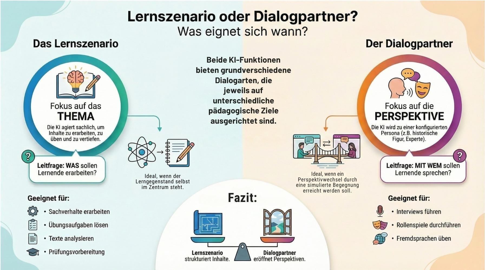

Überleitung: Warum KI in der Schule?
📊 Lebensrealität der Schüler:innen
Laut der JIM-Studie 2025 nutzen 75% der Schüler:innen KI für Hausaufgaben.
KI ist bereits Teil ihres Alltags – wir müssen sie verantwortungsvoll einbinden.
🏭 Sich verändernde Arbeitswelt
Berufe und Kompetenzen entwickeln sich rasant. Tools wie der Job-Futuromat des IAB zeigen, wie sich Anforderungen wandeln.
KI-Kompetenz wird zur Schlüsselqualifikation – für Lehrkräfte und Lernende.
🧠 KI als Werkzeug oder Risiko?
„KI kann den 'Muskel Gehirn' degenerieren lassen – oder optimal trainieren. Es kommt auf die Nutzung an.“
Wir müssen Lernende befähigen, KI kritisch und kreativ einzusetzen.
Kostenlose Tools für Lehrkräfte
ByCS
Integrierte KI-Lernplattform mit adaptiven Lernpfaden und Feedback-Tools.
Voraussetzung: Freigabe durch Schul-Administratoren.
Mehr Informationen: ByCS KI-Übersicht
ByLKI
KI-Plattform für bayerische Lehrkräfte (Angebot der ALP Dillingen).
Voraussetzung: FIBS-Account und Fortbildung im Selbstlernkurs.
Mehr Informationen: ByLKI Website
AIS.chat (ehemals telli)
Datenschutzkonformer KI-Chat für Schulen.
Voraussetzung: Freigabe von VIDIS, App-Freischaltung durch digitale AVV (durch Schulleitung).
Mehr Informationen: AIS.chat Website

KI – Chancen und Risiken in der Bildung
Chancen
- Individuelle Förderung: KI kann Lernstände analysieren und maßgeschneiderte Aufgaben vorschlagen.
- Zeitersparnis: Automatisierung von Korrekturen und Verwaltungsaufgaben entlastet Lehrkräfte.
- Inklusion: Barrierefreie Materialien und differenzierte Lernangebote für alle Schüler:innen.
- Aktualität: KI kann Inhalte in Echtzeit anpassen und aktuelle Bezüge herstellen.
Risiken
- Datenschutz: Sensible Daten müssen geschützt werden – besonders in schulischen Kontexten.
- Abhängigkeit: Übermäßige Nutzung kann kritisches Denken und Kreativität reduzieren.
- Ungleichheit: Nicht alle Schulen haben gleichen Zugang zu Technologie und Fortbildungen.
- Qualität: Wie stellen wir sicher, dass KI-Feedback pädagogisch wertvoll ist?
Diskussionsfragen mit Blick auf die Digitale Schule der Zukunft (DSdZ)
- Wie können wir KI so einsetzen, dass sie den Lernprozess unterstützt, ohne ihn zu ersetzen?
- Welche Rahmenbedingungen (z. B. Fortbildungen, Infrastruktur) brauchen Lehrkräfte für einen souveränen Umgang mit KI?
- Wie kann KI dazu beitragen, Feedback-Prozesse zu verbessern und individueller zu gestalten?
- Wie vermeiden wir, dass KI-Feedback zu generisch wird und den persönlichen Bezug verliert?
- Welche Chancen bietet KI, um Lernfortschritte sichtbarer und nachvollziehbarer zu machen?
- Wie können wir sicherstellen, dass KI-Systeme pädagogisch sinnvoll eingesetzt werden?
- Wie sieht eine Zukunftsvision für den Einsatz von KI im Feedback-Prozess aus?
- Wie können wir Lehrkräfte dabei unterstützen, KI als Werkzeug für besseres Feedback zu nutzen?
- Welche Risiken birgt der Einsatz von KI im Feedback-Prozess, und wie können wir sie minimieren?
- Wie gestalten wir den Übergang von traditionellem zu KI-unterstütztem Feedback?